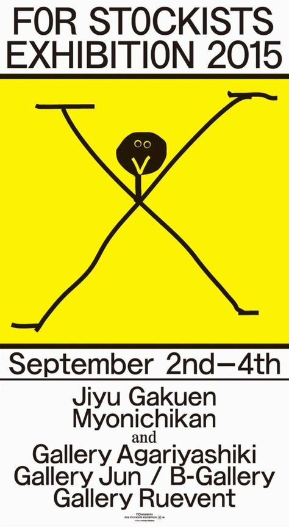
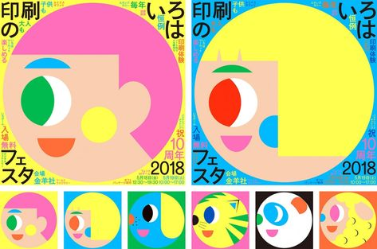

When it comes to Japanese design, what everyone must have heard most is "less is more". They pursue returning to
the design itself and more closely meet the needs of people in reality. Therefore, Japanese design style always
reveals simplicity, abstractness and even weirdness. . But there is such a designer who can be said to be
"deviant", and his work is often said to be "ugly". He even designed the cover of a certain yearbook, and some
member designers of a certain yearbook publicly claimed that they were from the publication. He felt ashamed as a
member,
but he became a cutting-edge Japanese designer.
Yui Takada, born in Tokyo in 1980, graduated from Kuwazawa Design Institute. He is a director, graphic designer and
art director of Japan Allright Co., Ltd. He once worked for good design company, and later established "Allright
Graphics" in 2006, Tokyo Style Associate professor at the university, one of the most noteworthy graphic designers
in Japan in recent years. In 2011, Yui Takada won the honor of "JAGDA Newcomer Award" and was
also hailed as a "bad boy" in the design world!


It seems difficult to associate Takada Yui with rebellion, but his works often give people the first impression
of being deviant. In fact, Yui Takada's early designs were not like this. He was once a very "orthodox" designer
- with a family background and formal education and training.
“For Japanese design,” Yui Takada said, “there is a feeling that I am tired of seeing it.”
In fact, as early as when he was a student, Takada Yui noticed that many of the so-called beautiful designs in
the Japanese design world actually followed a certain stereotyped framework. Everyone was pursuing high-end
beautiful designs, which made him feel very exhausted. In search of new visual experiences, Takada Yui began to
walk on the streets of Tokyo, carrying a camera to photograph and record signs and advertisements made by
ordinary people with no design experience.
He said, "Design is not just about pursuing visual beauty. I want to express the ideas that a person with no
design experience desperately wants to create and convey. I think this attitude is beautiful. This kind of
beauty is not restricted by any rules." , very shocking. I just want to incorporate this beauty into my work."
It’s hard to imagine that what Yui Takada admires the most is the packaging design of Coconut Tree brand coconut
juice. He even called it a “remarkable design” and posted on Instagram that he would drink a glass of it every
morning!
In addition, Takada Yui was deeply shocked by the design of electric vehicle fenders when he was collecting news
in Shanghai. Not only did he design the promotional poster for his first solo exhibition in Shanghai with
reference to the fender style, but the most unexpected thing was , he actually put an electric car in his solo
exhibition. By doing this, he can truly be called a "strange person" in the art world.
Inevitably, Takada Yui's "ugly" design can easily be regarded as another form of formalism - indeed, some people
have summarized Takada Yui's design as a "recently popular typography style". It seems easy to operate, but Takada
Yui is not. Don't really care. Rather than saying that he is blindly rebellious, it is better to say that he
integrates the visual experience of daily life into carefully decorated flat posters, which more shows his
thoughts on freedom and individuality. Behind it seems to be a stance of aesthetic equality. The "ugliness" in his
designs rebels against the institutionalized grid aesthetic of modernist design and even the modern commercial
society behind it.
As he wrote the introduction for the Ginza solo exhibition: "Designers must be like this, students must be like this, newcomers must be like this, men and women must be like this, don't pay attention to people who say such things. Focus on the direction that makes you understand, make you happy, and move your heart.
This is the message I want to convey.”
He said, "Although I don't know what kind of designs may appear in Japan in the future, I think there will be more different ways of thinking in the next era. What we can do is lay a good foundation for them."
.jpg)
.webp)
.webp)

.jpg)